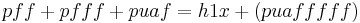
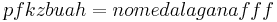

De: La Frikipedia, la enciclopedia extremadamente seria.
De: La Frikipedia, la enciclopedia extremadamente seria. De: La Frikipedia, la enciclopedia extremadamente seria.

|
Este artículo necesita ser ilustrado. Busca una afoto en nuestro depósito de imágenes o donde sea y ponla, pero que no sea pr0n, que se cabrea el señor del adSense y nos corta el grifo de los dólare. Y sin dólare no hay servidor... |
| De la serie fenómenos sociológicos: | |||
| Pff | |||
| |||
| Fenómeno sociológico | Pffditis | ||
| Principios | {{{principios}}} | ||
| Zona de origen | Los n00bs, frikipedistas, messenlleristas, etc | ||
| Consecuencias | Puede provocar flojera monumental | ||
| Símbolos típicos | Pff | ||
| Frikismo | Bastante | ||
| ¿Gusta a la gente normal? | Normalmente no (pero como no existe la gente normal..) | ||
| ¿Recomendable? | Sí si no te gusta la palabra puaff | ||
| Máximo exponente | IP anónima, que siempre lo usa. | ||
(Antes de nada poned imágenes que yo aún no puedo)
Pff (derivado de la palabra pfff) puede significar varias cosas y ninguna. Suele significar "Ni en pedo" . Es una palabra conjuncional o, en su defecto, un nexo coordinativo adversativo. Se utiliza en Méssenller, foros, la vida real, las escuela, las estafas y a veces, en sueños. Un ejemplo de escuela en el que se puede observar es:
{{Cita| Profesora: Alumno, hizo la tarea que mandé durante la clase?
Chico: Pff!!
(fragmento extraido de una conversación entre un profesora y un alumno rollinga)
Pueden variar, la palabra tiene la particularidad de adaptarse al 87.8% de las situaciones de la vida cotidiana
El Pff! tiene origenes rolingas. Su creadora es Julie, mientras discutía con un pibe . A partir de esto el Pff se fue expandiendo por todo el círculo cercano a Julie hasta llegar a conquistar el mundo. Actualmente "Pff!" es una filosofía de vida que invadió toda la tierra...lo único que puede vencerla es una pandemia zombie que según los científicos se dará en el año 2245. Hasta ese momento el Pff! seguirá gobernando la tierra. Su principal opositor es la pofesora freerss. El pibe con el que empezó todo sigue discutiéndole y no quiere admitir que perdió...pero julie lo quiere igual.
Tiene tantos y tan variados que he escrito solo los más conocidos.
Esta palabra es tan importante que tiene un hueco en la Realizima Jacandemia Hespiñola también conocida como (RAE o RJH).
Su significado es...
«Palabra que emplean los messenlleristas, foreros o Frikipedistas para decir la palabra Puaff. Por lo tanto, es una chorrada monumental que la tengamos incluida aquí, todo sea por seguir la tradicción.»
~ La RJH recordando su tradición de incluir en su diccionario SOLO las palabras inútiles
Escribir la palabra pff no es fácil (sobretodo si eres el pelotudo y has roto las teclas p y f). Una de las cosas más destacables de la palabra Pff es que SIEMPRE se escribe así: "Pff!" Es decir, siempre se escribe en mayúscula la primera letra y las "F" que le siguen en minúscula y, sobretodo, con un signo de exclamación hacia abajo (!). NUNCA hacia arriba porque eso querría decir "Se está quemando el reloj de la pared"(¡) y menos los dos(Ya que el significado sería "Se te está quemando el culo, pelotudo" (¡!). Eso sería una falta ortográfica horrible. También se suele escribir de dos "f" en adelante (pff, pfff, pffff, etc). Nunca con una sola (pf), eso, además de quedar horrible, parece una amenaza que indica al lector que quieren violarlo (todos lo hemos visto).
En una frase, suele verse así:
Pff!, que paja.
Se puede observar que el pff no va en minúscula y que se encuentra al principio de la frase.
Otro ejemplo es:
No tengo ni idea, Pff!
Se observa que también se puede escribir al final, pero siempre acompañado de una coma.
Nunca se observa así:
Me gustaría, pff, así que iré
Esto es una falta Hortográfica horrible, ya que se observa que no se entiende nada, así que n00bs y frikipedistas, usadlo.
Hay varias formas de pronunciarlo:
Méssenller: En conversaciones tipo:

|
-Ola. -Ola. -qieres venir conmigo a...? -pff -porqe no? en? en? eeeen? usuario 1 quedó sin admisión |

|
|
|
-qieres venir conmigo a...? -pff -porqe no? en? en? eeeen? usuario 1 quedó sin admisión |
|
Foros:
|
|
-comemelnabo869, quieres jugar al Mario Kart Online? -pff. -por qué no? en en ennnn? -ahoratelocomo fue denunciado. |
|
Los científicos están buscando un uso positivo para el nexo pff, pero de momento la investigación está estancada debido a que se ha encontrado un problema en el condensador de fluzo que estaban usando. Un bocata de chorizo, manteca colorá y una sardina fue el que obstruyó el cacharro (se piensa que fue Mario, el comebocatas de Sé lo que hicisteis ... ). Lo único que adelantaron los científicos fue que lo que habían descubierto es que la fórmula del pff es:


Ambas fórmulas han sido confirmadas por la RJH, que aunque no es dios, también es omnipresente
Autor(es):